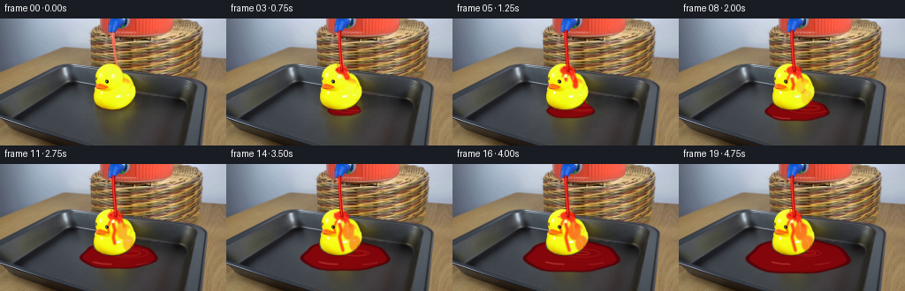
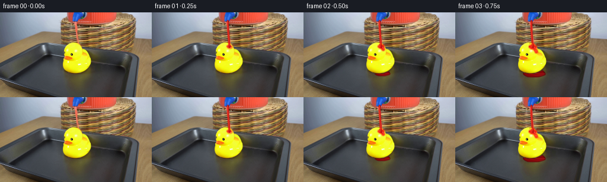
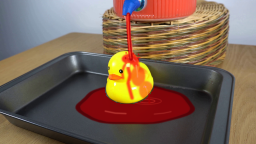

CODING AGENTS AS PIXEL WORLD MODELS
traex/GPT-5.6-Sol · 0087
点击播放 · 原生 RGB 像素
逐轮保存的候选
回放视频、检查图与代码变化。
每份候选均可单独播放。实际图片检查记录在下方工具轨迹中。
候选 01播放与检查图
点击播放 · 原生 RGB 像素

展开代码变化
--- 上一保存版本
+++ 本次保存版本
@@ -0,0 +1,229 @@
+from pathlib import Path
+import math
+import numpy as np
+import cv2
+from PIL import Image
+import artifact_io
+
+W, H = 256, 144
+S = 4
+ROOT = Path(__file__).resolve().parent
+base = np.asarray(Image.open(ROOT / "first_frame.png").convert("RGB"), dtype=np.uint8)
+assert base.shape == (H, W, 3)
+
+
+def blank():
+ return np.zeros((H*S, W*S), np.uint8)
+
+
+def ellipse(mask, box, value=255, thickness=-1):
+ x0,y0,x1,y1 = box
+ center=(round((x0+x1)*S/2), round((y0+y1)*S/2))
+ axes=(max(1,round((x1-x0)*S/2)), max(1,round((y1-y0)*S/2)))
+ cv2.ellipse(mask, center, axes, 0, 0, 360, int(value), thickness if thickness < 0 else thickness*S, cv2.LINE_AA)
+
+
+def poly(mask, pts, value=255):
+ q=np.array([[(round(x*S),round(y*S)) for x,y in pts]], np.int32)
+ cv2.fillPoly(mask,q,int(value),cv2.LINE_AA)
+
+
+def line(mask, pts, value=255, width=1.0, closed=False):
+ q=np.array([(round(x*S),round(y*S)) for x,y in pts],np.int32)
+ cv2.polylines(mask,[q],closed,int(value),max(1,round(width*S)),cv2.LINE_AA)
+
+
+def down(mask, blur=0.0):
+ if blur > 0:
+ sig=blur*S
+ k=max(3,int(sig*5)//2*2+1)
+ mask=cv2.GaussianBlur(mask,(k,k),sig)
+ return cv2.resize(mask,(W,H),interpolation=cv2.INTER_AREA).astype(np.float32)/255.0
+
+
+def over_color(img, m, color, opacity=1.0, preserve_light=False):
+ m=np.clip(m*opacity,0,1)[...,None]
+ c=np.asarray(color,np.float32)[None,None,:]
+ if preserve_light:
+ lum=(0.25*img[...,0]+0.62*img[...,1]+0.13*img[...,2])/255.0
+ factor=np.clip(0.62+0.55*lum,0.62,1.12)[...,None]
+ c=np.clip(c*factor,0,255)
+ return np.clip(img.astype(np.float32)*(1-m)+c*m,0,255)
+
+
+def irregular_oval(cx,cy,rx,ry,phase=0.0,n=72,scale=1.0):
+ pts=[]
+ for k in range(n):
+ a=2*math.pi*k/n
+ wob=1+0.045*math.sin(3*a+phase)+0.025*math.sin(7*a-0.7)
+ pts.append((cx+rx*scale*wob*math.cos(a),cy+ry*scale*wob*math.sin(a)))
+ return pts
+
+# Segmentation is deliberately local: only the yellow duck can receive the red coating.
+r,g,b=[base[...,k] for k in range(3)]
+duck=((r>165)&(g>125)&(b<105))
+region=np.zeros((H,W),bool); region[45:106,100:161]=True
+duck=(duck®ion).astype(np.uint8)*255
+duck=cv2.morphologyEx(duck,cv2.MORPH_CLOSE,np.ones((3,3),np.uint8))
+duck_soft=cv2.GaussianBlur(duck,(3,3),0.55).astype(np.float32)/255.0
+# Preserve a crisp outside silhouette while excluding the black eyes and orange bill.
+duck_hard=(duck>80).astype(np.float32)
+
+# Usable inner floor of the baking tray; keeps any puddle off its rim and table.
+tray_hi=blank()
+poly(tray_hi,[(15,89),(58,59),(78,55),(211,70),(228,88),(216,119),(195,129),(55,128),(25,113)])
+tray_mask=down(tray_hi,0.35)
+not_duck=1.0-cv2.dilate((duck_hard*255).astype(np.uint8),np.ones((3,3),np.uint8),iterations=1).astype(np.float32)/255.0
+
+
+def bezier_points(p0,p1,p2,n=35):
+ out=[]
+ for u in np.linspace(0,1,n):
+ v=1-u
+ out.append((v*v*p0[0]+2*v*u*p1[0]+u*u*p2[0],v*v*p0[1]+2*v*u*p1[1]+u*u*p2[1]))
+ return out
+
+
+def progressive_path(mask, pts, frac, width, value=255):
+ """Draw a fraction of a polyline, for gravity-driven rivulet growth."""
+ frac=float(np.clip(frac,0,1))
+ if frac<=0 or len(pts)<2: return
+ seg=[]
+ total=0.0
+ lens=[]
+ for a,b in zip(pts[:-1],pts[1:]):
+ d=math.hypot(b[0]-a[0],b[1]-a[1]); lens.append(d); total+=d
+ want=total*frac; done=0.0; seg=[pts[0]]
+ for a,b,d in zip(pts[:-1],pts[1:],lens):
+ if done+d<=want:
+ seg.append(b); done+=d
+ else:
+ q=(want-done)/max(d,1e-6)
+ seg.append((a[0]+q*(b[0]-a[0]),a[1]+q*(b[1]-a[1])))
+ break
+ if len(seg)>=2: line(mask,seg,value,width)
+
+
+def make_frame(i):
+ if i==0:
+ return base.copy()
+ sec=i/4.0
+ t=i/19.0
+ img=base.astype(np.float32).copy()
+
+ # A shallow red pool appears after liquid has run off the duck. Draw it first,
+ # so the duck remains correctly in front of it.
+ pp=np.clip((sec-0.35)/4.25,0,1)
+ if pp>0:
+ growth=pp**0.58
+ rx=5+53*growth; ry=2.5+17.5*growth
+ cx=133+1.5*pp; cy=103+1.7*pp
+ outer=blank(); poly(outer,irregular_oval(cx,cy,rx,ry,0.4))
+ om=down(outer,0.5)*tray_mask*not_duck
+ img=over_color(img,om,(114,2,8),0.86,True)
+ inner=blank(); poly(inner,irregular_oval(cx,cy,rx,ry,0.4,scale=0.925))
+ im=down(inner,0.75)*tray_mask*not_duck
+ img=over_color(img,im,(218,5,13),0.70,True)
+
+ # Dark meniscus and a moving pair of elliptical ripples where runoff lands.
+ edge=np.clip(om-down(inner,0.15)*tray_mask*not_duck,0,1)
+ img=over_color(img,edge,(82,0,5),0.72)
+ ripple=blank()
+ for rr,alpha in ((6+((sec*13)%10),145),(14+((sec*11+4)%14),95)):
+ cv2.ellipse(ripple,(round(147*S),round(101*S)),(round(rr*S),max(1,round(rr*0.23*S))),
+ 0,0,360,alpha,max(1,round(0.55*S)),cv2.LINE_AA)
+ rm=down(ripple,0.15)*om
+ img=over_color(img,rm,(255,77,63),0.55)
+
+ # Soft reflections on the glossy liquid surface.
+ shine=blank()
+ line(shine,[(105,111),(115,113),(126,113.5)],150,0.7)
+ line(shine,[(154,114),(164,113),(171,111.5)],115,0.6)
+ sm=down(shine,0.35)*im
+ img=over_color(img,sm,(255,126,107),0.65)
+
+ # Red liquid spreads over the crown, then follows several gravity paths.
+ wet=blank()
+ spread=np.clip((sec-0.08)/1.05,0,1)
+ ellipse(wet,(130-3.2-5.0*spread,57-1.5-2.0*spread,
+ 130+3.2+7.5*spread,57+2.0+5.0*spread),235)
+ # Connected wet sheet down the right side of head and breast.
+ right_frac=np.clip((sec-0.28)/2.2,0,1)
+ progressive_path(wet,[(132,59),(136,65),(139,72),(139,80),(144,86),(148,92),(149,98)],right_frac,5.4,235)
+ progressive_path(wet,[(129,60),(128,68),(130,75),(128,83),(130,91),(132,98)],
+ np.clip((sec-0.55)/2.8,0,1),3.1,220)
+ progressive_path(wet,[(128,61),(124,66),(122,72),(123,78)],
+ np.clip((sec-0.75)/1.7,0,1),2.0,205)
+ # Broaden the settled coating around the right cheek without covering eye or bill.
+ q=np.clip((sec-1.25)/2.7,0,1)
+ if q>0:
+ ellipse(wet,(133-2*q,68-2*q,142+3*q,83+3*q),int(155*q))
+ ellipse(wet,(139,81,151+2*q,98+q),int(135*q))
+ wetm=down(wet,0.7)*duck_soft
+ img=over_color(img,wetm,(239,7,15),0.87,True)
+
+ # Wet highlights give the coating a transparent, glossy-liquid appearance.
+ gloss=blank()
+ line(gloss,[(128.5,57.5),(132,58),(135,61)],210,0.8)
+ if sec>0.7: progressive_path(gloss,[(136,65),(137,71),(137.5,77)],np.clip((sec-.7)/1.5,0,1),0.75,190)
+ if sec>1.4: progressive_path(gloss,[(144,85),(147,90),(148,95)],np.clip((sec-1.4)/1.5,0,1),0.65,155)
+ gm=down(gloss,0.22)*wetm
+ img=over_color(img,gm,(255,181,151),0.74)
+
+ # Small drips leave the lower body and join the pool.
+ if sec>1.15:
+ drips=blank()
+ cycle=(sec-1.15)%0.95
+ length=2.0+min(cycle/0.65,1)*7.0
+ line(drips,[(149,94),(149.3,94+length)],235,1.15)
+ if cycle>0.64:
+ yy=101+min((cycle-.64)/.31,1)*4
+ ellipse(drips,(148.5,yy-1,150.2,yy+1.3),230)
+ dm=down(drips,0.20)
+ img=over_color(img,dm,(225,2,10),0.96,True)
+
+ # Main pour: a slightly wavering, optically dense red column from the spout.
+ stream=blank()
+ wiggle=0.42*math.sin(i*1.31)
+ pts=bezier_points((128.2,14.2),(128.0+wiggle,35),(131.0+0.22*wiggle,58.8),40)
+ width=2.25+1.0*(1-math.exp(-sec*2.0))+0.18*math.sin(i*1.7)
+ line(stream,pts,245,width)
+ stm=down(stream,0.28)
+ img=over_color(img,stm,(221,3,11),0.94,True)
+ # Narrow warm core and tiny darker edge convey cylindrical reflection.
+ core=blank(); line(core,[(x-0.32,y) for x,y in pts],210,max(0.55,width*0.26))
+ cm=down(core,0.13)
+ img=over_color(img,cm,(255,99,49),0.76)
+ edge=blank(); line(edge,[(x+width*.34,y) for x,y in pts],120,0.48)
+ em=down(edge,0.12)
+ img=over_color(img,em,(126,0,8),0.55)
+
+ # Impact crown and sparse ballistic splash droplets. Emissions are deterministic.
+ impact=blank()
+ ellipse(impact,(127.2,56.1,136.5,62.2),175)
+ imp=down(impact,0.5)*duck_soft
+ img=over_color(img,imp,(245,12,17),0.62,True)
+
+ drops=blank()
+ # Each frame emits two particles; only their first 0.72 s of flight is visible.
+ velocities=[(-17,-16),(16,-12),(-10,-23),(21,-20),(-22,-9),(11,-27),(25,-13),(-14,-19)]
+ for e in range(1,i+1):
+ age=(i-e)/4.0
+ if age>0.72: continue
+ for j in range(2):
+ vx,vy=velocities[(2*e+j)%len(velocities)]
+ vx*=0.72 if j else 1.0
+ x=131+vx*age
+ y=59+vy*age+0.5*42*age*age
+ if 2<x<W-2 and 18<y<126:
+ rad=0.75 if age<0.45 else 0.55
+ ellipse(drops,(x-rad,y-rad*1.4,x+rad,y+rad*1.4),220)
+ dpm=down(drops,0.18)
+ img=over_color(img,dpm,(236,7,14),0.93,True)
+
+ return np.clip(np.rint(img),0,255).astype(np.uint8)
+
+
+frames=np.stack([make_frame(i) for i in range(20)],axis=0)
+assert np.array_equal(frames[0],base)
+artifact_io.save(frames,ROOT)
可观测工具轨迹
实际执行的命令与返回图片。
命令 1exit 0
/bin/bash -lc "cat GENERATION_RULES.md && printf '\\n--- PROMPT ---\\n' && cat prompt.txt"
命令 2exit 1
/bin/bash -lc "find . -maxdepth 2 -type f -printf '%p\\n' | sort && printf '\\n--- binaries ---\\n' && command -v ffmpeg && command -v python3"
命令 3exit 0
/bin/bash -lc "sed -n '1,240p' artifact_io.py"
命令 4exit 0
/bin/bash -lc "python3 - <<'PY'
from PIL import Image
im=Image.open('first_frame.png')
print(im.mode, im.size)
import numpy as np
x=np.array(im)
print(x.shape,x.dtype,x.min(),x.max())
PY"命令 5exit 0
/bin/bash -lc "python3 - <<'PY' mods=['PIL','numpy','cv2','imageio','scipy'] for m in mods: try: z=__import__(m); print(m,'OK',getattr(z,'__version__','')) except Exception as e: print(m,'NO',e) PY"
命令 6exit 0
/bin/bash -lc "cat > generate.py <<'PY'
from pathlib import Path
import math
import numpy as np
import cv2
from PIL import Image
import artifact_io
W, H = 256, 144
S = 4
ROOT = Path(__file__).resolve().parent
base = np.asarray(Image.open(ROOT / \"first_frame.png\").convert(\"RGB\"), dtype=np.uint8)
assert base.shape == (H, W, 3)
def blank():
return np.zeros((H*S, W*S), np.uint8)
def ellipse(mask, box, value=255, thickness=-1):
x0,y0,x1,y1 = box
center=(round((x0+x1)*S/2), round((y0+y1)*S/2))
axes=(max(1,round((x1-x0)*S/2)), max(1,round((y1-y0)*S/2)))
cv2.ellipse(mask, center, axes, 0, 0, 360, int(value), thickness if thickness < 0 else thickness*S, cv2.LINE_AA)
def poly(mask, pts, value=255):
q=np.array([[(round(x*S),round(y*S)) for x,y in pts]], np.int32)
cv2.fillPoly(mask,q,int(value),cv2.LINE_AA)
def line(mask, pts, value=255, width=1.0, closed=False):
q=np.array([(round(x*S),round(y*S)) for x,y in pts],np.int32)
cv2.polylines(mask,[q],closed,int(value),max(1,round(width*S)),cv2.LINE_AA)
def down(mask, blur=0.0):
if blur > 0:
sig=blur*S
k=max(3,int(sig*5)//2*2+1)
mask=cv2.GaussianBlur(mask,(k,k),sig)
return cv2.resize(mask,(W,H),interpolation=cv2.INTER_AREA).astype(np.float32)/255.0
def over_color(img, m, color, opacity=1.0, preserve_light=False):
m=np.clip(m*opacity,0,1)[...,None]
c=np.asarray(color,np.float32)[None,None,:]
if preserve_light:
lum=(0.25*img[...,0]+0.62*img[...,1]+0.13*img[...,2])/255.0
factor=np.clip(0.62+0.55*lum,0.62,1.12)[...,None]
c=np.clip(c*factor,0,255)
return np.clip(img.astype(np.float32)*(1-m)+c*m,0,255)
def irregular_oval(cx,cy,rx,ry,phase=0.0,n=72,scale=1.0):
pts=[]
for k in range(n):
a=2*math.pi*k/n
wob=1+0.045*math.sin(3*a+phase)+0.025*math.sin(7*a-0.7)
pts.append((cx+rx*scale*wob*math.cos(a),cy+ry*scale*wob*math.sin(a)))
return pts
# Segmentation is deliberately local: only the yellow duck can receive the red coating.
r,g,b=[base[...,k] for k in range(3)]
duck=((r>165)&(g>125)&(b<105))
region=np.zeros((H,W),bool); region[45:106,100:161]=True
duck=(duck®ion).astype(np.uint8)*255
duck=cv2.morphologyEx(duck,cv2.MORPH_CLOSE,np.ones((3,3),np.uint8))
duck_soft=cv2.GaussianBlur(duck,(3,3),0.55).astype(np.float32)/255.0
# Preserve a crisp outside silhouette while excluding the black eyes and orange bill.
duck_hard=(duck>80).astype(np.float32)
# Usable inner floor of the baking tray; keeps any puddle off its rim and table.
tray_hi=blank()
poly(tray_hi,[(15,89),(58,59),(78,55),(211,70),(228,88),(216,119),(195,129),(55,128),(25,113)])
tray_mask=down(tray_hi,0.35)
not_duck=1.0-cv2.dilate((duck_hard*255).astype(np.uint8),np.ones((3,3),np.uint8),iterations=1).astype(np.float32)/255.0
def bezier_points(p0,p1,p2,n=35):
out=[]
for u in np.linspace(0,1,n):
v=1-u
out.append((v*v*p0[0]+2*v*u*p1[0]+u*u*p2[0],v*v*p0[1]+2*v*u*p1[1]+u*u*p2[1]))
return out
def progressive_path(mask, pts, frac, width, value=255):
\"\"\"Draw a fraction of a polyline, for gravity-driven rivulet growth.\"\"\"
frac=float(np.clip(frac,0,1))
if frac<=0 or len(pts)<2: return
seg=[]
total=0.0
lens=[]
for a,b in zip(pts[:-1],pts[1:]):
d=math.hypot(b[0]-a[0],b[1]-a[1]); lens.append(d); total+=d
want=total*frac; done=0.0; seg=[pts[0]]
for a,b,d in zip(pts[:-1],pts[1:],lens):
if done+d<=want:
seg.append(b); done+=d
else:
q=(want-done)/max(d,1e-6)
seg.append((a[0]+q*(b[0]-a[0]),a[1]+q*(b[1]-a[1])))
break
if len(seg)>=2: line(mask,seg,value,width)
def make_frame(i):
if i==0:
return base.copy()
sec=i/4.0
t=i/19.0
img=base.astype(np.float32).copy()
# A shallow red pool appears after liquid has run off the duck. Draw it first,
# so the duck remains correctly in front of it.
pp=np.clip((sec-0.35)/4.25,0,1)
if pp>0:
growth=pp**0.58
rx=5+53*growth; ry=2.5+17.5*growth
cx=133+1.5*pp; cy=103+1.7*pp
outer=blank(); poly(outer,irregular_oval(cx,cy,rx,ry,0.4))
om=down(outer,0.5)*tray_mask*not_duck
img=over_color(img,om,(114,2,8),0.86,True)
inner=blank(); poly(inner,irregular_oval(cx,cy,rx,ry,0.4,scale=0.925))
im=down(inner,0.75)*tray_mask*not_duck
img=over_color(img,im,(218,5,13),0.70,True)
# Dark meniscus and a moving pair of elliptical ripples where runoff lands.
edge=np.clip(om-down(inner,0.15)*tray_mask*not_duck,0,1)
img=over_color(img,edge,(82,0,5),0.72)
ripple=blank()
for rr,alpha in ((6+((sec*13)%10),145),(14+((sec*11+4)%14),95)):
cv2.ellipse(ripple,(round(147*S),round(101*S)),(round(rr*S),max(1,round(rr*0.23*S))),
0,0,360,alpha,max(1,round(0.55*S)),cv2.LINE_AA)
rm=down(ripple,0.15)*om
img=over_color(img,rm,(255,77,63),0.55)
# Soft reflections on the glossy liquid surface.
shine=blank()
line(shine,[(105,111),(115,113),(126,113.5)],150,0.7)
line(shine,[(154,114),(164,113),(171,111.5)],115,0.6)
sm=down(shine,0.35)*im
img=over_color(img,sm,(255,126,107),0.65)
# Red liquid spreads over the crown, then follows several gravity paths.
wet=blank()
spread=np.clip((sec-0.08)/1.05,0,1)
ellipse(wet,(130-3.2-5.0*spread,57-1.5-2.0*spread,
130+3.2+7.5*spread,57+2.0+5.0*spread),235)
# Connected wet sheet down the right side of head and breast.
right_frac=np.clip((sec-0.28)/2.2,0,1)
progressive_path(wet,[(132,59),(136,65),(139,72),(139,80),(144,86),(148,92),(149,98)],right_frac,5.4,235)
progressive_path(wet,[(129,60),(128,68),(130,75),(128,83),(130,91),(132,98)],
np.clip((sec-0.55)/2.8,0,1),3.1,220)
progressive_path(wet,[(128,61),(124,66),(122,72),(123,78)],
np.clip((sec-0.75)/1.7,0,1),2.0,205)
# Broaden the settled coating around the right cheek without covering eye or bill.
q=np.clip((sec-1.25)/2.7,0,1)
if q>0:
ellipse(wet,(133-2*q,68-2*q,142+3*q,83+3*q),int(155*q))
ellipse(wet,(139,81,151+2*q,98+q),int(135*q))
wetm=down(wet,0.7)*duck_soft
img=over_color(img,wetm,(239,7,15),0.87,True)
# Wet highlights give the coating a transparent, glossy-liquid appearance.
gloss=blank()
line(gloss,[(128.5,57.5),(132,58),(135,61)],210,0.8)
if sec>0.7: progressive_path(gloss,[(136,65),(137,71),(137.5,77)],np.clip((sec-.7)/1.5,0,1),0.75,190)
if sec>1.4: progressive_path(gloss,[(144,85),(147,90),(148,95)],np.clip((sec-1.4)/1.5,0,1),0.65,155)
gm=down(gloss,0.22)*wetm
img=over_color(img,gm,(255,181,151),0.74)
# Small drips leave the lower body and join the pool.
if sec>1.15:
drips=blank()
cycle=(sec-1.15)%0.95
length=2.0+min(cycle/0.65,1)*7.0
line(drips,[(149,94),(149.3,94+length)],235,1.15)
if cycle>0.64:
yy=101+min((cycle-.64)/.31,1)*4
ellipse(drips,(148.5,yy-1,150.2,yy+1.3),230)
dm=down(drips,0.20)
img=over_color(img,dm,(225,2,10),0.96,True)
# Main pour: a slightly wavering, optically dense red column from the spout.
stream=blank()
wiggle=0.42*math.sin(i*1.31)
pts=bezier_points((128.2,14.2),(128.0+wiggle,35),(131.0+0.22*wiggle,58.8),40)
width=2.25+1.0*(1-math.exp(-sec*2.0))+0.18*math.sin(i*1.7)
line(stream,pts,245,width)
stm=down(stream,0.28)
img=over_color(img,stm,(221,3,11),0.94,True)
# Narrow warm core and tiny darker edge convey cylindrical reflection.
core=blank(); line(core,[(x-0.32,y) for x,y in pts],210,max(0.55,width*0.26))
cm=down(core,0.13)
img=over_color(img,cm,(255,99,49),0.76)
edge=blank(); line(edge,[(x+width*.34,y) for x,y in pts],120,0.48)
em=down(edge,0.12)
img=over_color(img,em,(126,0,8),0.55)
# Impact crown and sparse ballistic splash droplets. Emissions are deterministic.
impact=blank()
ellipse(impact,(127.2,56.1,136.5,62.2),175)
imp=down(impact,0.5)*duck_soft
img=over_color(img,imp,(245,12,17),0.62,True)
drops=blank()
# Each frame emits two particles; only their first 0.72 s of flight is visible.
velocities=[(-17,-16),(16,-12),(-10,-23),(21,-20),(-22,-9),(11,-27),(25,-13),(-14,-19)]
for e in range(1,i+1):
age=(i-e)/4.0
if age>0.72: continue
for j in range(2):
vx,vy=velocities[(2*e+j)%len(velocities)]
vx*=0.72 if j else 1.0
x=131+vx*age
y=59+vy*age+0.5*42*age*age
if 2<x<W-2 and 18<y<126:
rad=0.75 if age<0.45 else 0.55
ellipse(drops,(x-rad,y-rad*1.4,x+rad,y+rad*1.4),220)
dpm=down(drops,0.18)
img=over_color(img,dpm,(236,7,14),0.93,True)
return np.clip(np.rint(img),0,255).astype(np.uint8)
frames=np.stack([make_frame(i) for i in range(20)],axis=0)
assert np.array_equal(frames[0],base)
artifact_io.save(frames,ROOT)
PY
python3 generate.py
ls -lh pixels.npz inspection.png transition_check.png index.html frames/00.png frames/19.png"命令 7exit 0
/bin/bash -lc "python3 - <<'PY'
from pathlib import Path
import numpy as np
from PIL import Image
src=np.array(Image.open('first_frame.png').convert('RGB'))
fs=[]
for p in sorted(Path('frames').glob('*.png')):
x=np.array(Image.open(p))
fs.append(x)
print('count',len(fs),'shape',np.stack(fs).shape,'dtype',np.stack(fs).dtype)
print('frame0 exact',np.array_equal(src,fs[0]),'maxerr',np.abs(src.astype(int)-fs[0].astype(int)).max())
z=np.load('pixels.npz')['pixels']
print('pixels',z.shape,z.dtype)
# Changed pixels per transition and global fixed background statistics
for i in range(1,20):
n=np.count_nonzero(np.any(fs[i]"'!=fs[i-1],axis=2))
print(f'"'{i:02d}: {n:5d}',end=' ')
if i%5==0: print()
print()
PY
python3 generate.py >/dev/null
sha256sum pixels.npz frames/00.png frames/19.png generate.py"视觉工具实际返回图片 1

视觉工具实际返回图片 2

视觉工具实际返回图片 3

视觉工具实际返回图片 4

保存候选 1 份；完成命令 7 次；可验证图片返回 4 张。原始 API 响应与完整日志保留在本地。